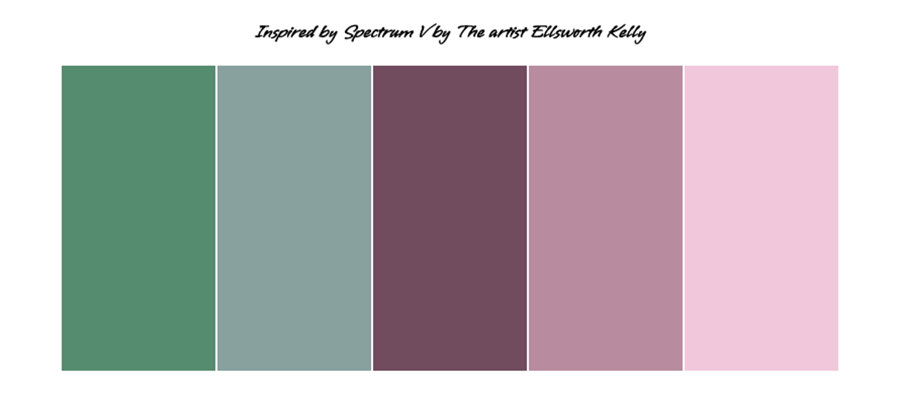
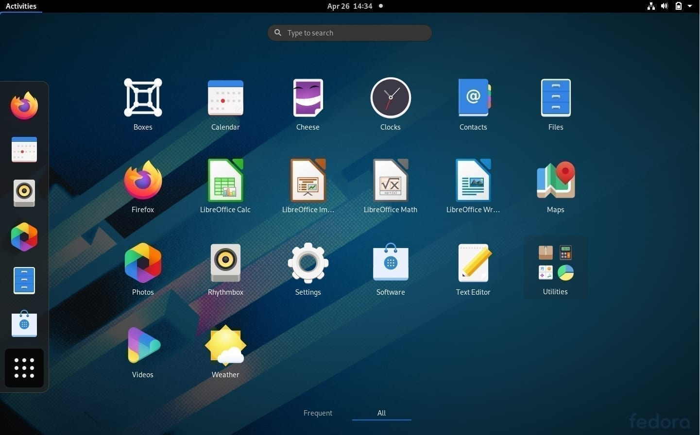

Portfolio Page!

Spectrum V by Elisabeth Kelly
The Spectrum V is a real painting located at the Metropolitan Museum of Art in NYC. I was able to recreate it with CSS, i used a table to organize the colors.

Fedora
Fedora Linux is a Linux distribution developed by Fedora Project. I was able to dowloand the program and tried run it in one of the old computer we have, however i was only able to run it for a minute. it was a workspace for developers.